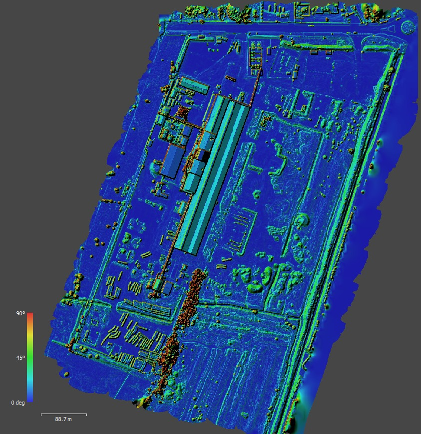

Brindamos soluciones aéreas completas para topografía e ingeniería, monitoreo e inspección de obras, así como para la gestión y análisis de proyectos. Nos comprometemos a garantizar la máxima calidad y precisión en cada etapa del proceso. Brindamos soluciones aéreas completas para topografía e ingeniería, monitoreo e inspección de obras, así como para la gestión y análisis de proyectos.

1Topografía e ingeniería
Revolucionamos los proyectos de ingeniería con servicios de topografía e ingeniería. Utilizando drones de última generación, capturamos datos aéreos con precisión milimétrica, creando mapas topográficos detallados y modelos tridimensionales. Esto optimiza la planificación, reduce tiempos y costos, y minimiza riesgos al evitar que el personal acceda a terrenos peligrosos. Con nuestra tecnología avanzada, garantizamos eficiencia, seguridad y economía en sus proyectos de ingeniería.
2Inspección de estructuras
Ofrecemos servicios especializados en la inspección de estructuras e infraestructuras. Utilizando drones de última generación, realizamos evaluaciones detalladas y precisas de puentes, edificios, torres y otras construcciones. Esta tecnología permite detectar problemas estructurales de manera temprana, reduciendo riesgos y costos de mantenimiento. Además, al evitar el uso de métodos tradicionales que implican andamios o grúas, mejoramos la seguridad del personal y aceleramos los tiempos de inspección hasta en un 200 % mas rapido que el motodo tradicional y así obtener diagnósticos rápidos y fiables que aseguren la integridad y longevidad de sus infraestructuras.
3Inspección de obras
Nos especializamos en el monitoreo de obras y proyectos con la ayuda de drones de última generación. Esta tecnología nos permite realizar un seguimiento continuo y detallado del progreso de sus proyectos, proporcionando informes visuales y datos precisos en tiempo real. Al utilizar drones, podemos identificar problemas potenciales antes de que se conviertan en retrasos costosos, optimizando así la gestión del tiempo y los recursos. Además, nuestra solución reduce la necesidad de presencia física constante en el sitio, minimizando riesgos y mejorando la seguridad del personal. Confíe en nosotros para mantener su proyecto en curso y dentro del presupuesto, asegurando una ejecución eficiente y sin contratiempos.
4Medición de volúmenes áreas y perfiles
Ofrecemos servicios precisos de medición de volúmenes, áreas y perfiles mediante drones de última generación. Esta tecnología nos permite calcular con exactitud el volumen de material excavado o rellenado en proyectos de movimiento de tierras, determinar áreas y volúmenes de residuos en rellenos sanitarios, también medir áreas y analizar perfiles topográficos en construcciones de edificios y viviendas. Utilizar drones no solo reduce tiempos y costos comparado con métodos tradicionales, sino que también mejora la seguridad al evitar que el personal acceda a terrenos difíciles. Con WRB INGENIERIA, garantizamos mediciones precisas y confiables que optimizan sus proyectos, asegurando resultados eficientes y de alta calidad.
5Hidrología y ambiental
Esta tecnología nos permite mapear con exactitud el curso de los ríos, sus curvas y proyecciones, lo cual es esencial para la gestión de recursos hídricos y la planificación de infraestructuras. Además, realizamos estudios ambientales detallados que incluyen, la identificación de zonas vulnerables a inundaciones y la evaluación del impacto ambiental en diferentes ecosistemas. Utilizar drones no solo reduce tiempos y costos en comparación con métodos tradicionales, sino que también mejora la seguridad al evitar que el personal acceda a terrenos difíciles.
6Fotogrametría y modelos en 3d
Ofrecemos servicios avanzados de fotogrametría y creación de modelos en 3D utilizando drones de última generación. Nuestra tecnología nos permite capturar imágenes aéreas detalladas y generar modelos tridimensionales precisos, esenciales para la planificación y gestión de proyectos. Estos modelos en 3D proporcionan una representación visual y cuantitativa exacta del terreno y las estructuras, facilitando aplicaciones como la topografía, la planificación urbana, la inspección de infraestructuras y los estudios ambientales, mejorando así la eficiencia y precisión de sus proyectos.
Equipos
Los drones DJI Mavic 3E son una herramienta revolucionaria en el campo de la ingeniería, destacándose por su capacidad para capturar datos geoespaciales de alta resolución con gran precisión. Ofrecen ventajas significativas, como su facilidad de uso, autonomía extendida, y robustez, lo que optimiza la eficiencia de los proyectos y reduce tiempos y costos. El Mavic 3E, en particular, se distingue por su precisión en tareas de topografía, cartografía e inspección de infraestructuras, elevando los estándares de precisión y fiabilidad en el sector.

Usamos hardware de NVIDIA RTX que ha revolucionado el procesamiento de imágenes y datos en diversos sectores gracias a sus capacidades avanzadas en inteligencia artificial y aprendizaje profundo. Estas GPU permiten realizar análisis de datos de manera extremadamente rápida y eficiente, lo cual es excelente en aplicaciones como la topografía, cartografía e inspección de infraestructuras. Las ventajas incluyen un procesamiento veloz, automatización de tareas complejas, visualización realista mediante ray tracing en tiempo real, y una optimización del flujo de trabajo que reduce tiempos.

portafolio
El Modelo Digital de Elevación (MDE) es esencial para la planificación y ejecución de proyectos en ingeniería, geología, hidrología y gestión ambiental. Proporciona una representación tridimensional precisa del terreno, facilitando el diseño de infraestructuras, la gestión de recursos y la mitigación de riesgos naturales. Además, permite realizar análisis y simulaciones precisas, optimizando la toma de decisiones y minimizando costos y impactos ambientales, lo que resulta muy eficiente para la precisión, eficiencia y sostenibilidad de los proyectos.

El Modelo Digital de Elevaciones (DEM) desempeña un papel vital en la planificación y desarrollo de proyectos en campos como la ingeniería, la geología, la hidrología y la gestión ambiental. Al ofrecer una representación tridimensional detallada del terreno, el DEM facilita el diseño de infraestructuras, la administración de recursos naturales y la prevención de riesgos naturales. Además, su capacidad para permitir análisis y simulaciones precisas mejora la toma de decisiones, reduce costos y disminuye el impacto ambiental, siendo esencial para asegurar la precisión, eficiencia y sostenibilidad en diversos proyectos.